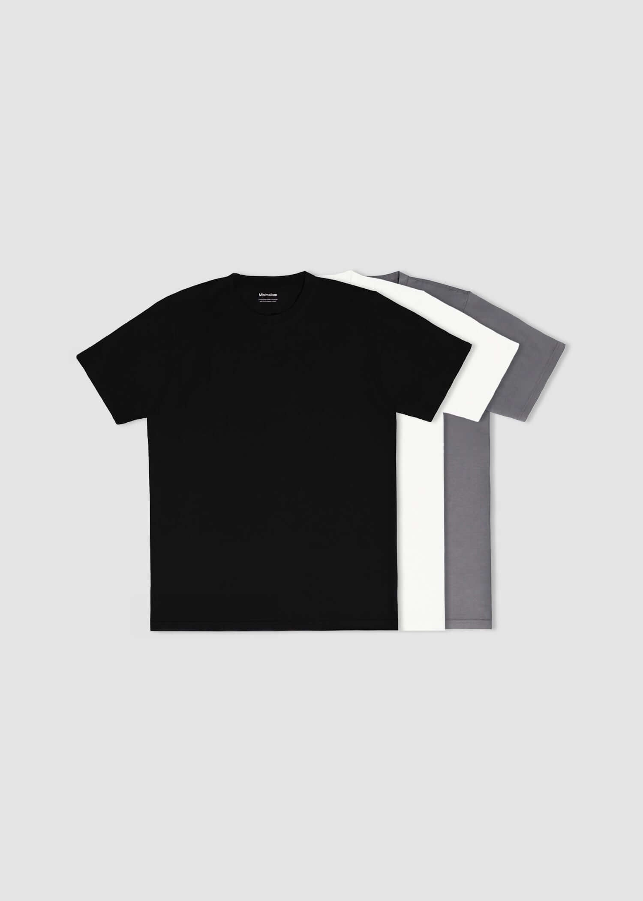
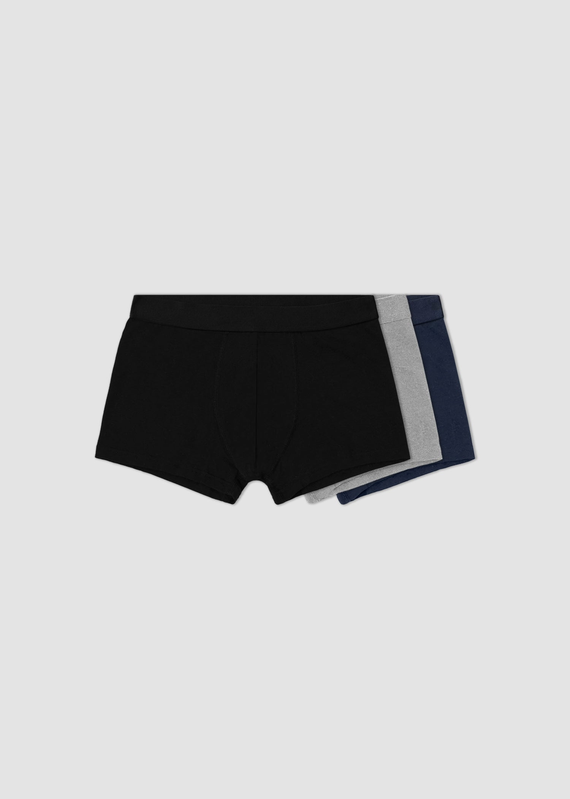
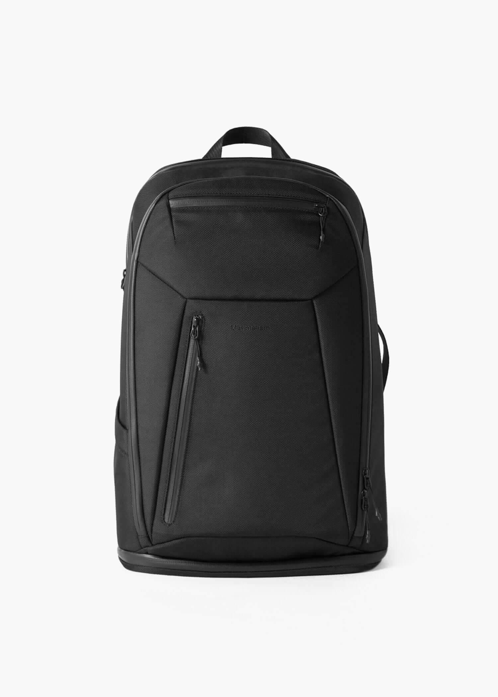

Camiseta algodón orgánico - Pack 3 uds
Pack de tres camisetas de algodón orgánico; tallas y colores se eligen en la tienda oficial.
Ver ficha oficial ↗BÁSICOS SIN LOGOS
Camisetas, bóxers y una mochila. Una selección esencial con un plan de cantidades que no decide por ti.

Tres referencias reales. Las opciones, precios y existencias se confirman en la tienda oficial.
Pack de tres camisetas de algodón orgánico; tallas y colores se eligen en la tienda oficial.
Ver ficha oficial ↗
Pack de tres bóxers: la ficha declara 95% algodón orgánico y 5% elastano.
Ver ficha oficial ↗
Mochila 360 de la colección de accesorios; consulta medidas y compartimentos en su ficha.
Ver ficha oficial ↗TU LISTA LOCAL
Tu selección queda en este navegador. No reserva productos ni envía pedidos.
La marca presenta ropa sin logos y básicos de uso continuado.
La web ofrece packs de camisetas y ropa interior.
Cada ficha mantiene sus tallas y composición; no se extrapolan entre referencias.